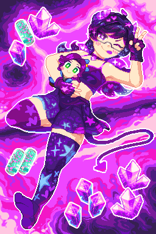
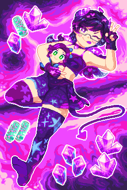

Done commissioned works
Only selected few images zoom in when being hovered.
Please don't use my works for any crypto, NFT, and AI garbage, thank you.
If you encountered some bugs please let me know.
ü°∏ Go back Go to home page Go to bottom ü°≥
Accessibility: Supports prefers-reduced-motion or turning off animations.
üè∑Ô∏è Ko-fi, VGen
üè∑Ô∏è Ko-fi, VGen
 

üè∑Ô∏è Ko-fi, VGen, picoCAD
üè∑Ô∏è Ko-fi, VGen, picoCAD